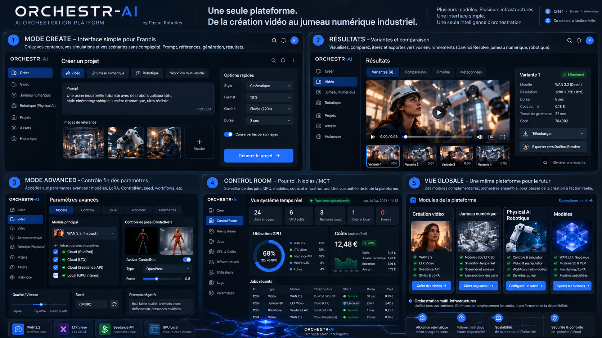
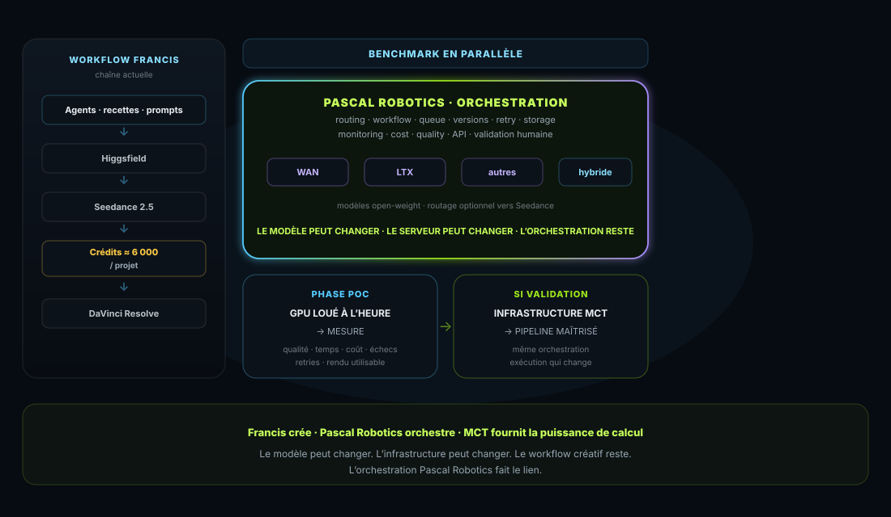

Seedance 2.5
Moteur de génération vidéo — cœur du workflow actuel.
Accès restreint
Document de travail · Francis × MCT. Entrez le mot de passe pour afficher le contenu.
Contrôle côté navigateur uniquement (GitHub Pages) — ce n’est pas une sécurité serveur.
Pipeline vidéo IA · Francis × Pascal Robotics × MCT
Francis crée.
Pascal Robotics orchestre.
MCT fournit la puissance de calcul.
Deuxième chemin en parallèle — pas un remplacement. Sur un projet type, Francis consomme environ 6 000 crédits. Le POC loue d’abord du GPU à l’heure, mesure qualité / vitesse / échecs / coût, puis — si validé — reporte la même architecture sur une infra GPU MCT.
Document de travail · POC · non industrialisé · non contractuel. Aucun partenariat signé, aucune capacité MCT déjà live, aucun ROI annoncé.
Le modèle peut changer. L’infrastructure peut changer. Le workflow créatif reste. L’orchestration Pascal Robotics fait le lien.
01 · Workflow réel
Francis produit déjà avec une chaîne exigeante. Les outils ne sont pas le problème : c’est la dépendance économique et technique à une infra facturée au crédit, dès qu’on itère beaucoup.
Plus d’itération = plus de crédits. La qualité créative se paie en volume de génération.
Moteur de génération vidéo — cœur du workflow actuel.
Environnement / plateforme autour de la génération.
Exploration visuelle et itérations complémentaires.
Post-production, assemblage, finition.
Recettes, agents d’assistance, expérience accumulée.
Beaucoup d’essais — c’est précisément ce qui fait monter la facture crédits.
02 · Positionnement
Le POC ne demande pas à Francis d’abandonner Seedance, Higgsfield ni son environnement actuel. Il construit une deuxième voie en parallèle. Seedance / Higgsfield restent le benchmark de référence du POC.
Chaîne actuelle
Chaîne expérimentale
03 · Couche Pascal Robotics
Pascal Robotics n’est ni réalisateur, ni datacenter, ni nouveau modèle vidéo. La couche vise à relier création, modèles et compute — sans verrouiller le créateur à un seul vendeur.
La valeur n’est pas seulement dans le modèle ou le GPU : elle est dans l’orchestration des modèles, de l’infra et des workflows créatifs — sans lock-in à un fournisseur unique.
Capacités visées par la couche (cible POC / trajectoire — pas un produit fini) :
04 · Interface · OrchestrAI
OrchestrAI (ORCHESTR-AI · AI Orchestration Platform by Pascal Robotics) est le concept logiciel / l’interface que Pascal Robotics conçoit pour la couche d’orchestration de ce POC : une seule surface pour la génération créative, le routage multi-modèles, le choix d’infra (GPU cloud loué / plus tard MCT), la mesure coût & qualité, et la comparaison — pour relier le workflow créatif de Francis au compute sans lui demander d’administrer des GPU.

Plusieurs modèles. Plusieurs infrastructures. Une interface simple. Une seule intelligence d’orchestration.
Ce que la maquette montre — comme vision, pas comme produit live :
01
Interface simple pour Francis : prompts, références, options rapides (style, format, qualité, durée), génération.
02
Variantes, métadonnées coût / temps / modèle, export vers DaVinci — pour comparer sans quitter le flux créatif.
03
Paramètres fins, sélection d’infra (cloud loué / GPU local), contrôles techniques — quand le simple ne suffit plus.
04
Pour Nicolas / MCT : usage GPU, jobs, coûts — une vue ops distincte de la surface créative.
05
Modules (vidéo, Digital Twin, Physical AI, modèles) — vision plateforme plus longue, au-delà du POC vidéo.
05 · Acteurs
| Acteur | Apport | Rôle dans le POC | Valeur recherchée |
|---|---|---|---|
| Francis | Création, exigence qualitative, workflows Seedance / Higgsfield / KREA / DaVinci, prompts, agents, expérience | Cas d’usage réel et barre créative de référence — il continue à produire avec ses outils | Disposer d’un second chemin mesurable, sans abandonner ce qui marche déjà |
| Pascal Robotics | Orchestration, intégration, pilotage du POC, couche de connexion modèles ↔ infra ↔ workflow | Construire et opérer la couche expérimentale ; comparer, documenter, itérer | Prouver qu’une chaîne ouverte, portable et mesurable est tenable — sans se poser en middleman commercial |
| MCT (Nicolas) | Puissance de calcul GPU (cible) | Pas nécessairement en Phase 1 — phase suivante si le POC est concluant | Décider d’investir (ou non) sur des mesures concrètes : qualité, coût, fiabilité, charge réelle |
06 · Trajectoire
Production avec les outils de Francis, crédits cloud, ≈ 6 000 crédits / projet.
Conduit par Pascal Robotics. Pas hébergé chez MCT au départ. Location de GPU à l’heure auprès d’un cloud GPU.
Même orchestration, exécution sur infra GPU MCT. Le moteur d’orchestration reste ; l’infra d’exécution change.
07 · Comparaison
| Aujourd’hui | POC Pascal Robotics | Cible si validation | |
|---|---|---|---|
| Créatif | Francis + outils actuels (Seedance / Higgsfield / KREA / DaVinci) | Francis conserve son exigence et son workflow de référence ; le POC tourne en parallèle | Workflow créatif inchangé dans l’esprit — la barre reste celle de Francis |
| Génération | Seedance 2.5 via Higgsfield, facturation au crédit | Modèles open-weight (WAN, LTX, autres) + possibilité de routage hybride vers Seedance quand c’est le meilleur choix | Même logique de modèles, exécutée sur infra GPU MCT |
| Économie | ≈ 6 000 crédits / projet ; coût lié au volume d’itération | Coût GPU / heure + coût par séquence utilisable — à mesurer | Coût d’infra maîtrisé et traçable ; décision fondée sur les mesures du POC |
| Infrastructure | Cloud externe facturé au crédit | GPU loué à l’heure (cloud GPU) — pas MCT en Phase 1 | Infrastructure GPU MCT |
| Orchestration | Principalement dans les outils / manuelle | Couche Pascal Robotics (routing, files, versions, retries, logs, mesure…) | Même moteur d’orchestration — seule l’exécution change |
| Mesure | Vision partielle (crédits, ressenti qualité) | Qualité, temps, échecs, retries, stockage, coût / séquence utilisable | Mesure continue en exploitation |
| Objectif | Produire | Comparer | Exploiter |
08 · Architecture
Schéma de principe pour le POC — rôles et interfaces à confirmer au fil des essais. Pas un produit industrialisé.

09 · Modèles
On parle de modèles ouverts / open-weight (WAN, LTX, autres pertinents) — pas d’un blanket « open source ». Le pipeline cible est hybride : il peut encore router vers Seedance lorsque c’est le meilleur choix pour un shot donné.
Poids accessibles, exécutables sur GPU loué puis éventuellement MCT — portabilité et maîtrise technique.
Example : open-weight pour une série d’essais ; Seedance pour un plan où le benchmark reste supérieur.
L’orchestration évite qu’un seul modèle ou une seule infra devienne une dépendance structurelle.
10 · Portabilité & maîtrise
Un POC sur GPU loué, ce n’est pas encore de la souveraineté territoriale. C’est apprendre à porter la chaîne, à la maîtriser, à en mesurer l’économie, à rester modulaire et indépendant d’un modèle unique, et à pouvoir changer d’infra. Une souveraineté plus forte ne devient pertinente que si / quand le pipeline tourne sur une infra localisée MCT.
Même orchestration, autre exécution.
Comprendre logs, files, échecs, versions.
€ / séquence utilisable, pas seulement des crédits.
Modèle et serveur interchangeables.
11 · Preuves à apporter
Questions ouvertes — le POC existe pour y répondre, pas pour les présumer.
Un modèle open-weight (WAN, LTX, autre) peut-il produire des séquences que Francis juge utilisables face au benchmark Seedance / Higgsfield ?
Quel est le coût GPU par séquence utilisable (pas seulement par génération brute) sur du compute loué à l’heure ?
Temps de génération, taux d’échec, retries, temps humain, stockage — quel est le profil réel de la chaîne ?
L’orchestration permet-elle de changer de modèle ou d’infra sans casser le workflow créatif ?
Un routage hybride (open-weight + Seedance quand c’est le meilleur choix) tient-il en conditions réelles ?
Les mesures rendent-elles crédible une bascule progressive vers une infra GPU MCT — ou non ?
12 · Pour Francis
Une voie expérimentale en parallèle — sans obligation d’abandonner Seedance / Higgsfield.
Passer du « crédit opaque » à un coût mesuré par séquence utilisable.
Ne plus dépendre structurellement d’un seul moteur de génération.
Logs, versions, retries, comparaison — pour itérer avec plus de méthode.
Une architecture qui peut suivre un changement d’infra plus tard.
Seedance reste le benchmark ; rien n’est « imposé » comme remplacement.
13 · Pour MCT
Le POC ne présuppose pas une capacité MCT déjà live. Il produit des sorties de mesure pour une décision d’investissement : qualité atteinte, coût GPU, charge réelle, fiabilité, profil d’usage. On n’investit qu’après validation — pas avant.
Charge et profil d’usage observés sur un cas créatif réel.
Coût / séquence utilisable avant d’engager du silicon.
Si oui → même orchestration sur GPU MCT. Si non → on arrête sans sur-investir.
Conclusion
Francis apporte le cas d’usage réel et la barre créative. MCT est la puissance de calcul de demain — pas nécessairement d’aujourd’hui. Pascal Robotics est la couche pour tester, mesurer, orchestrer et déplacer les charges.
Le premier objectif n’est pas de vendre de l’infra. C’est de répondre à une question simple : peut-on construire une chaîne vidéo IA plus ouverte, mesurable et progressivement maîtrisée — sans demander au créateur d’abandonner les outils qui marchent déjà ?
Si oui, le POC devient la base d’une infra plus large. Si non, on l’aura appris avec des chiffres — pas avec un discours.
Le modèle peut changer. L’infrastructure peut changer. Le workflow créatif reste. L’orchestration Pascal Robotics fait le lien.